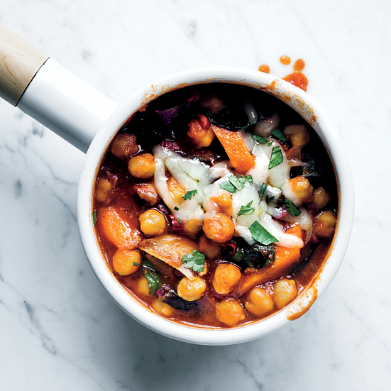

In a large saucepan, cook the bacon over moderately high heat, stirring occasionally, until the fat is rendered, about 7 minutes. Add the onion, carrot, garlic and a generous pinch each of salt and pepper and cook, stirring occasionally, until softened, 8 to 10 minutes. Add the tomatoes, stock, chickpeas, Swiss chard and chipotles and bring to a boil. Simmer over moderately low heat until the chili is thickened and the Swiss chard is wilted and just tender, about 8 minutes. Serve in bowls topped with shredded cheese.
INGREDIENTS:6 slices of bacon, chopped 1 large onion, chopped 1 large carrot, cut into 1/2-inch pieces 2 garlic cloves, thinly sliced Salt Pepper One 28-ounce can crushed tomatoes 2 cups chicken stock or low-sodium broth Two 15-ounce cans chickpeas, rinsed 1 pound Swiss chard, leaves and stems chopped 3 chipotles in adobo, minced Shredded Monterey Jack cheese, for serving
